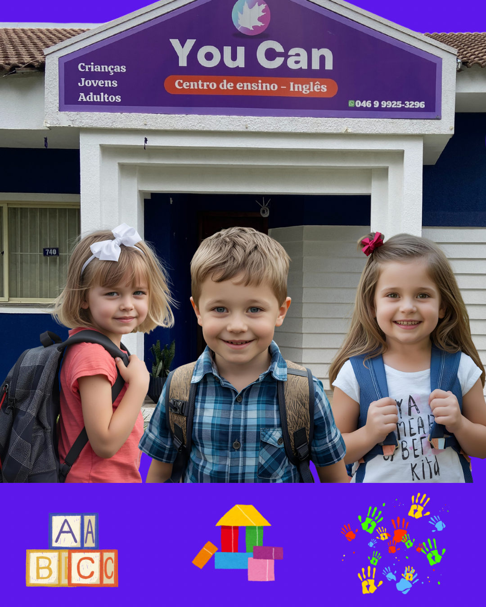

Aprendizado com Diversão!
O You Can Kids é voltado para crianças de 3 a 10 anos, com foco em aprendizado lúdico, músicas, jogos e desafios que despertam a curiosidade e tornam o inglês algo natural desde cedo.
Através da gamificação, as crianças aprendem enquanto se divertem, desenvolvendo a fala, escuta e vocabulário de maneira leve e espontânea.